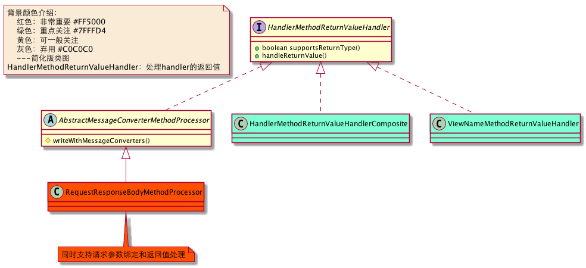

Spring-MVC基础设施介绍
介绍基础设施之前，先说说Spring MVC
由于Spring MVC涉及的组件较多，这里只列出主要的组件。
一.核心组件
1. DispatcherServlet
DispatcherServlet它负责接收HTTP请求并协调Spring MVC的各个组件完成请求处理的工作，可以认为是SpringMVC的心脏。
{kind=link}

2. HandlerMethod
HandlerMethod可以理解为Controller方法包装,它就是常说的Handler。
{kind=link}
3. HandlerAdapter
HandlerAdapter：作为DispatcherServlet和Handler之间的适配器,在DispatcherServlet不直接使用Handler，通过HandlerAdapter调用这样增加了扩展性，以支持不同的Handler。
{kind=link}
4. HandlerInterceptor
HandlerInterceptor：可以在Handler的执行前后对处理流程进行拦截操作，拥有更细粒度的拦截点。(个人认为和BeanPostProcess味道差不多)
{kind=link}
5. HandlerMapping
HandlerMapping：负责查找Handler以处理web请求。
{kind=link}
6. HandlerExecutionChain
HandlerExecutionChain：持有Handler和HandlerInterceptor，实际查找Handler时，返回的是HandlerExecutionChain。
{kind=link}
7. HandlerMethodArgumentResolver
HandlerMethodArgumentResolver：负责参数解析。
{kind=link}
8. HandlerMethodReturnValueHandler
HandlerMethodReturnValueHandler：处理handler的返回值。
{kind=link}

9. HttpMessageConverter
HttpMessageConverter：它负责将请求信息转换为一个对象（类型为T）或将对象（类型为T）输出为响应信息。
{kind=link}
以上就是主要的Spring MVC组件，足见分工明确，工程浩大。大家先有个印象，我们接下来看看Spring是怎样通过DispactcherServlet处理的：Spring-MVC的心脏-DispactcherServlet。
附录：
{kind=link}
{kind=link}
快速导航：